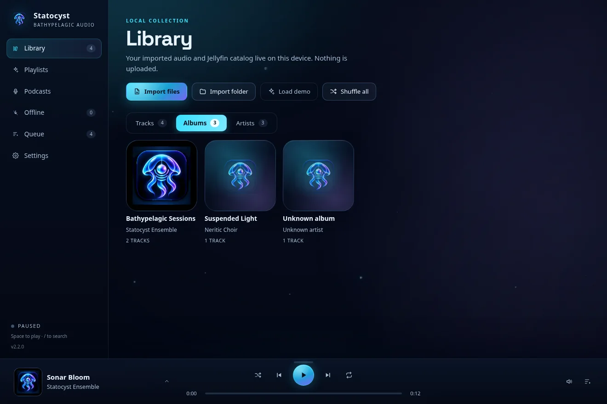
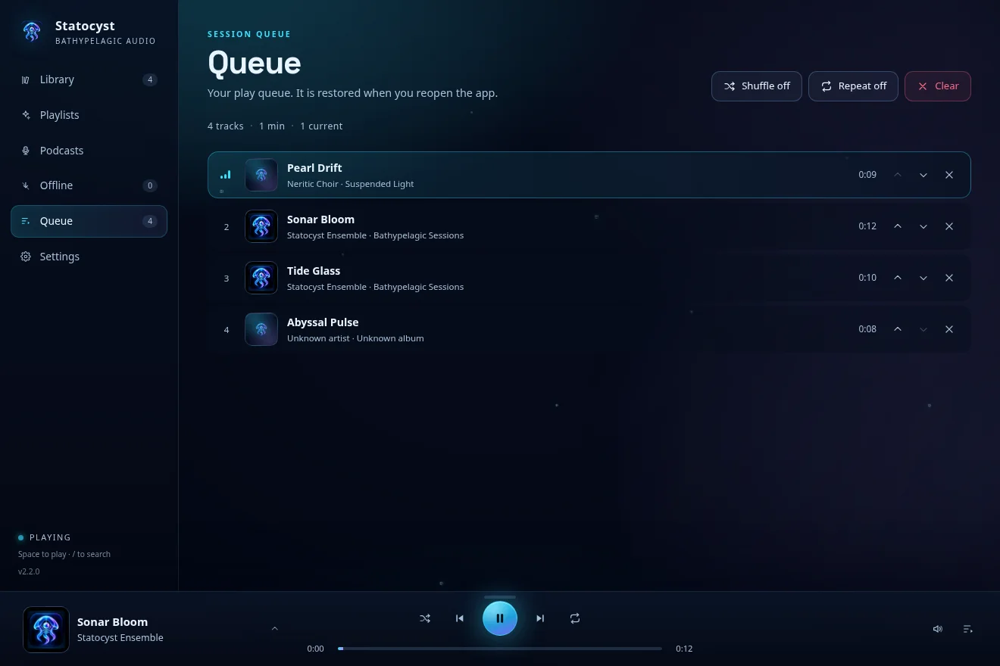
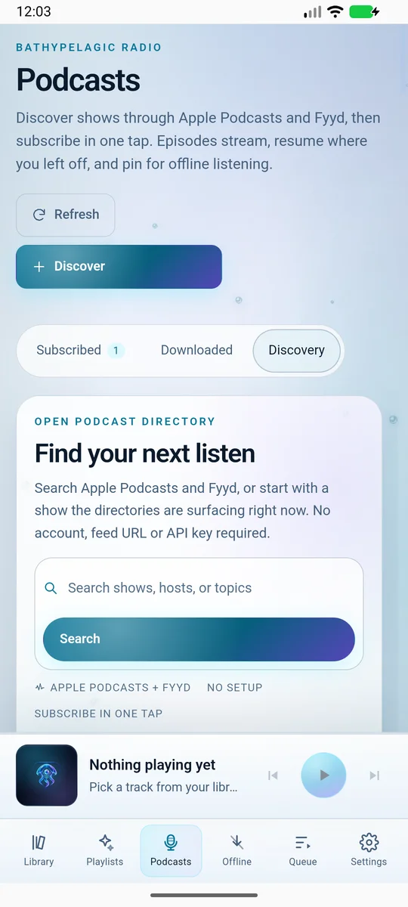
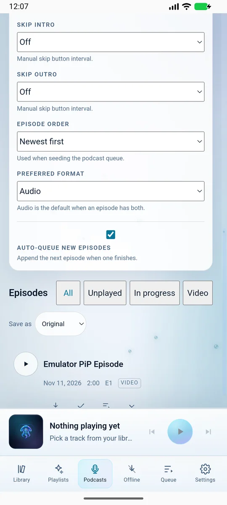

A player, not a shop
Statocyst does not sell, host or stream music of its own. It plays audio you already have: files on your device, or media from a Jellyfin server you control. There is nothing to subscribe to and no catalogue to rent.
Your files · Your server · Your car
Statocyst is a music and podcast player for the library you already own. Play the audio files on your device, or connect the Jellyfin server you run yourself. Desktop, tablet, phone and Android Auto. One queue at a time, saved through restarts. No account with us, no ads, no tracking.
Chrome may stop at 100%; the APK may already be in Downloads. Other platforms, file sizes and install notes
“Every depth” means every screen and every source you own, not a claim about audio quality. Why the water?


You do not need to know what “local-first”, “Jellyfin” or “depth” mean before you use this page. Here is the whole idea in six short answers.
Statocyst does not sell, host or stream music of its own. It plays audio you already have: files on your device, or media from a Jellyfin server you control. There is nothing to subscribe to and no catalogue to rent.
“Local-first” means the library list, queue, favourites and listening history live on your device. We do not run a cloud library or keep a profile of you. The app only uses the network for features you turn on: your own server, a podcast search, or optional artwork lookup.
Jellyfin is free, open-source software that you — or someone you trust — run on a home server, a NAS (network storage box) or a computer. It indexes your media and serves it to apps like Statocyst. Think of it as a streaming service where you own the server. Statocyst needs your address and normal login, not a plugin. If you do not have Jellyfin, local files work on their own.
Music and podcasts each keep their own saved queue; only one is active at a time. Change screen or close the app and the order is still there, along with the current track, position, shuffle and repeat state.
Depth here is the water metaphor for going from the surface — the screen in front of you — down to the files and server you actually own, then back out to every device. It is not a claim about audio resolution, a bass setting or a “deep cuts” feature. “Every depth” means the same library on desktop, tablet, phone, car and offline.
Statocyst is MIT licensed. You can read the code, build it yourself, change it for your own use and share your version. There is no account to cancel and no server of ours that can switch off. The open-source section explains what that means in practice.
Statocyst (STAT-oh-sist) is a real organ. The word comes from Greek: statos, standing, and kystis, sac. It is the small balance sensor in a jellyfish: a tiny stone suspended in a fluid-filled sac. When the animal tilts, the stone presses on sensitive hairs and tells it which way is up. It is not an eye or an ear. It is the part that keeps its bearings.
That is the promise we borrowed. A large music library can feel like open water — thousands of tracks, several sources, no fixed up. We wanted a name for a small, calm instrument that helps you find your place again. It is also a quiet joke: the app is named after the part of the jellyfish that knows where it is, not the part that stings.
The water is not a claim that the sound is “deeper”. It is the shape of the page: surface light at the top, twilight in the middle, midnight at the bottom, then a sand shelf where you can actually download something. The depth markers are a reading aid, not an audio measurement. The app icon keeps the jellyfish silhouette, the suspended pearl and the sonar lines; this page extends that icon rather than inventing a second brand.
Real screenshots from the current {{VERSION}} release, not mockups. The same library, queue and artwork appear on desktop, tablet and phone. The car view is the one exception; it is labelled where it appears.


Most players assume a streaming account and treat your own files as an import. Statocyst starts at the other end: your library is the original. Jellyfin, podcasts and the car are additions you can choose, not requirements.

Local files
Add music from your device and Statocyst reads the artist, album and cover art already inside the files. It keeps that index on your device, so browsing and playback work without a connection or an account.

Queue
The queue is simply the list of what plays next. We made it the durable part of the app rather than a side effect of the current screen: reorder it, remove a track, close the app, and the same queue is waiting when you return. The current track and position come back too.
Jellyfin + mobile
If you already run Jellyfin, Statocyst signs in with the address and account you use there. It copies the list of albums, artists and tracks to your device, streams from your server over a secure connection when you are away, and plays downloaded copies when you are offline. Jellyfin is optional: local files never need it.
Search two public podcast directories — Apple Podcasts and Fyyd — without pasting a feed URL or creating an account with either. Subscribe in one tap, and episodes sit beside your albums. A feed URL is just the address a show publishes its episodes at.


Apple Podcasts + Fyyd
Discovery is built in. Subscriptions are saved on your device, episodes resume where you stopped, and audio and video episodes share the podcast queue. Searching sends your query to those public directories; nothing about your library is included.
Three short, silent recordings from the Android app: Library into Playlists, Library into Queue, and Library into Now playing. They show the transitions, not a scripted tour.
Only clips that exist are shown. Desktop and car motion captures are still to come.
Android Auto is the in-car version of Android, shown on the head unit — the screen in your dashboard. Statocyst gives Android Auto its own connection to the library, so the car can browse your music and the saved queue without opening the full app on your phone. Playback keeps going when the phone screen is off, and the queue is the same one you left there.
Preview note: these two images are reconstructions, not photographs of a real dashboard. They use Statocyst’s real browse categories and buttons on the standard Android Auto layout. We will replace them with a real head-unit capture when we have one.

Statocyst is open source under the MIT licence. In plain words: you can read the code, build it yourself, change it for your own use, and share your version. Nobody can take the app away from you or force an update you do not want.
The project started as a personal library player, not a streaming product. The goal was simple: play the files and the server we already had, on every screen we actually use, without an account in the middle. The open licence is part of the same idea.
That is also why the promises on this page are checkable. The privacy policy lives in the same repository as the code. If we say there is no analytics, you can search for one. If you disagree with a decision, you can copy the code and change it.
We would rather show the seams than pretend there are none. The desktop builds are unsigned, Android and iOS are installed by you rather than through a store, and Linux is the reference desktop target. That is not a marketing footnote; it changes what you need to do to install the app, so the steps are below.
Read the sourceMIT is a short licence that allows use, copying, modification and sharing, including commercially, as long as you keep the copyright notice. It does not cost anything and it does not expire. It is the reason a community can continue the project if the original maintainers stop.
A SHA-256 checksum is a long fingerprint calculated from the download. If even one byte changes, the fingerprint changes. Compare the file you downloaded with the value on the release page if you want to be sure it arrived intact.
There is no sign-up, no profile and no identifier with us. Your Jellyfin login goes to your server, not to us. If you delete the app, there is no account left behind to delete.
Statocyst is preparing for Google Play and the App Store. Both stores review an app before it can be listed publicly, and Google Play also requires a period of real-world testing for new personal-account apps. We are looking for Android and iOS testers with real libraries, Jellyfin servers and car setups. A “closed beta” is a limited test group: you install a build, use it, and tell us what breaks.
Current downloads are manual installs — files you install yourself. Store builds are not public yet.
Current release {{RELEASE_NAME}}, published {{RELEASE_DATE}}. Choose a platform; the release page on GitHub carries the checksums and full notes. If you are not sure which file you need, the install notes below explain AppImage, .deb, APK and IPA.
Downloads start immediately. If your browser does not start the file, use the platform list or open the release page. The size is listed beside each platform.
On Android, Chrome sometimes finishes the APK but leaves the download at 100%. Check Files → Downloads for the APK; if its size matches the Android row, open it from there instead of downloading again. Android install steps.
macOS Open the DMG (the disk image file), drag Statocyst into Applications, then right-click the app and choose Open the first time. macOS warns you because the build is not signed with a paid Apple certificate. You can also allow it in System Settings → Privacy & Security.
Windows Run the .exe installer. If SmartScreen says Windows protected your PC, choose More info → Run anyway. The build is not signed with a paid Windows certificate.
Linux An AppImage is a single portable file: make it executable with chmod +x statocyst-*.AppImage, then run it. A .deb is the package format used by Debian and Ubuntu; open it with your software installer.
Android An APK is the Android install file. The APK is served from this site, and it is the same signed file as the GitHub release. Allow installs from the browser or file manager you downloaded it with, then open it. For Android Auto, enable “Unknown sources” for Statocyst — the car build is not from Play yet. If Chrome leaves the download at 100%, the APK is often already complete: check Files → Downloads for the file and its size. If it is not there, try Firefox or the release page.
iOS An IPA is an iOS app archive, not an App Store download. This one is signed for a limited set of devices, so it must be installed with a tool that loads app files directly and your own Apple signing identity. There is no one-click path; TestFlight will be easier when the beta opens.